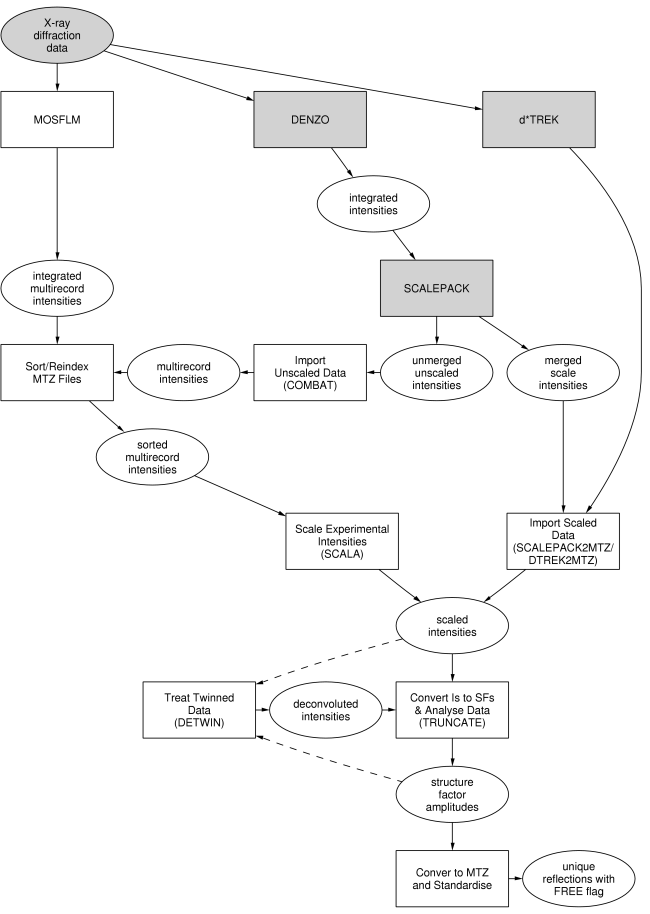

|
CCP4 Roadmaps |
| DATA REDUCTION |
DATA PROCESSING AND REDUCTION

The plain rectangular boxes represent
tasks as in the
CCP4 Graphical User Interface, the steps to take for data reduction.
The stippled rectangular boxes represent external programs. 'Convert to MTZ & Standardise' is not
part of the
Data Reduction module in the Interface;
it is part of the
Reflection Data Utilities module.
The ellipsoids represent the input and output to and from the various tasks. Some data processing
is required before CCP4 programs can be used, hence the stippling of the 'X-ray diffraction data'
ellipsoid.
Auxiliary CCP4 programs used in these tasks
- CAD
- Collect and sort crystallographic reflection data from several files
- CROSSEC
- Interpolate X-ray cross sections and compute anomalous scattering factors
- F2MTZ
- Convert at formatted reflection file to MTZ format
- FREERFLAG
- Tag each reflection in an MTZ file with a flag for cross-validation
- REBATCH
- Alters batch numbers in unmerged MTZ file
- REINDEX
- Reindex or change symmetry of unmerged or merged MTZ file (can also be done with COMBAT/SORTMTZ/SCALEPACK etc.)
- ROTAPREP
- Produce an MTZ file in multirecord form suitable for input to SCALA (superseded by COMBAT)
- TRACER
- Lattice TRAnsformation and CEll Reduction to analyse for other possible unit cells
- WILSON
- Wilson plot to determine scale factor / temperature factor (also incorporated into TRUNCATE)
MADNES data
- ABSURD
- Initial processing of intensity files from MADNES (can be used for DENZO data, too)
- UNDUPL
- Remove duplicates from MADNES data, after ABSURD
Other non-CCP4 programs
- Crystal
Twinning Server
- Merohedral Crystal Twinning Server - forms interface to twinning test
Further reading
CCP4i Documentation on Data Processing

Reindexing
Twinning
FreerUnique
Introduction to Hemihedral Twinning
CCP4 Program Documentation